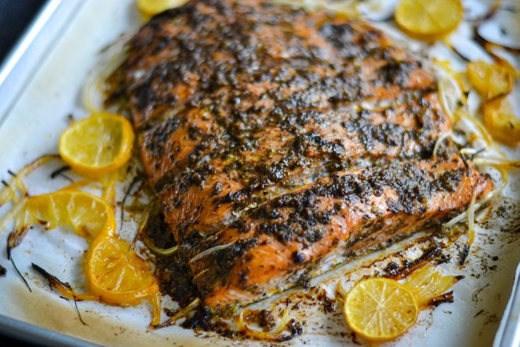

Home
Jerk Salmon

Description
A deliciously baked jerk salmon recipe that is guranteed to leave you wanting more.
Ingredients
- Salmon
- Salt
- Black pepper
- Jamaican jerk seasoning, wet and dry
- Allspice
- Lawry's seasoned salt
- Adobo all purpose seasoning
Steps
- Season the cuts of salmon to taste
- Bake the seasoned salmon at 350° until fully cooked
- Remove salmon from the over and enjoy!